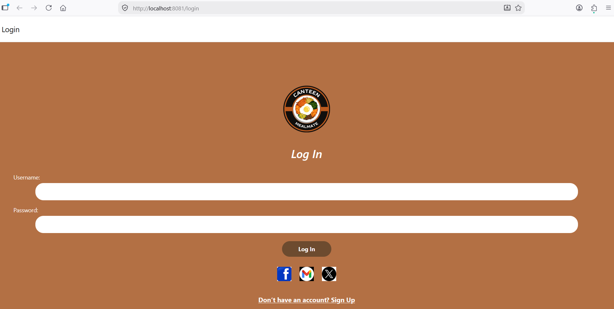
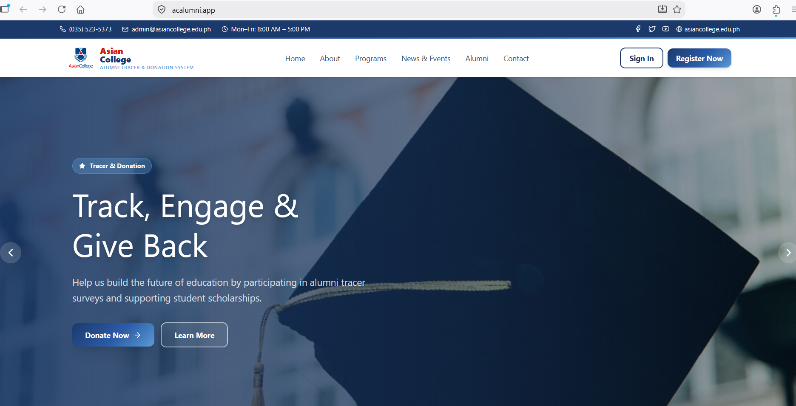
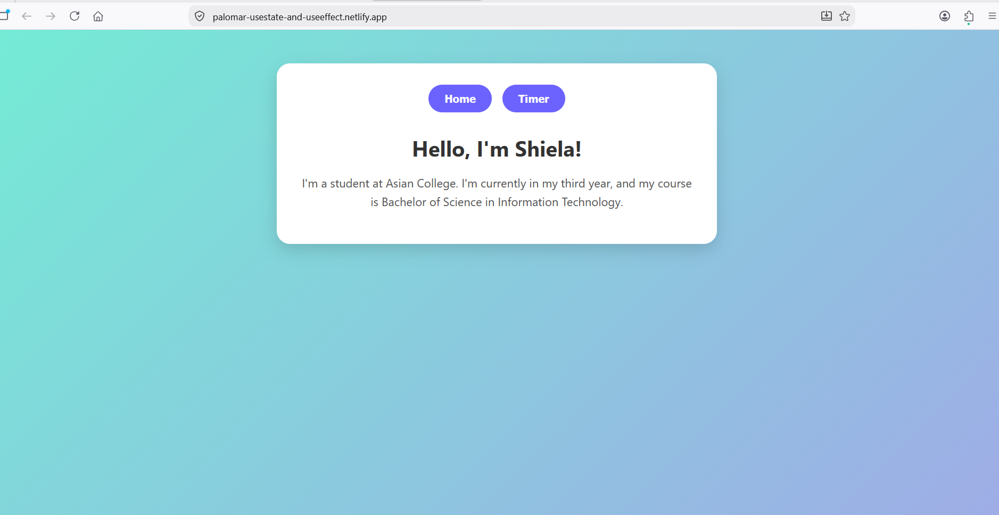
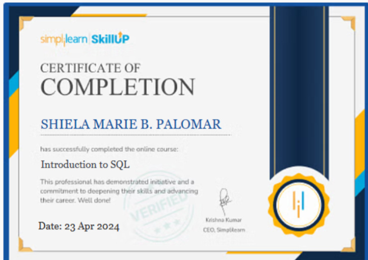
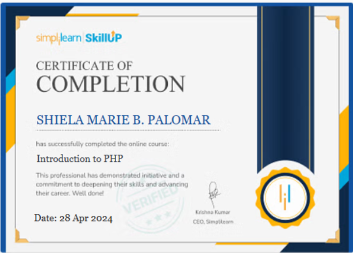
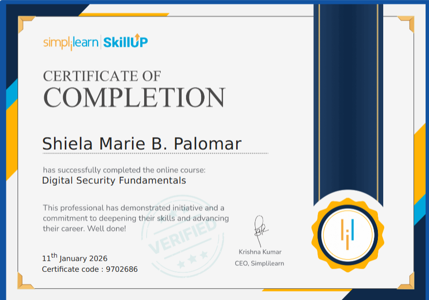
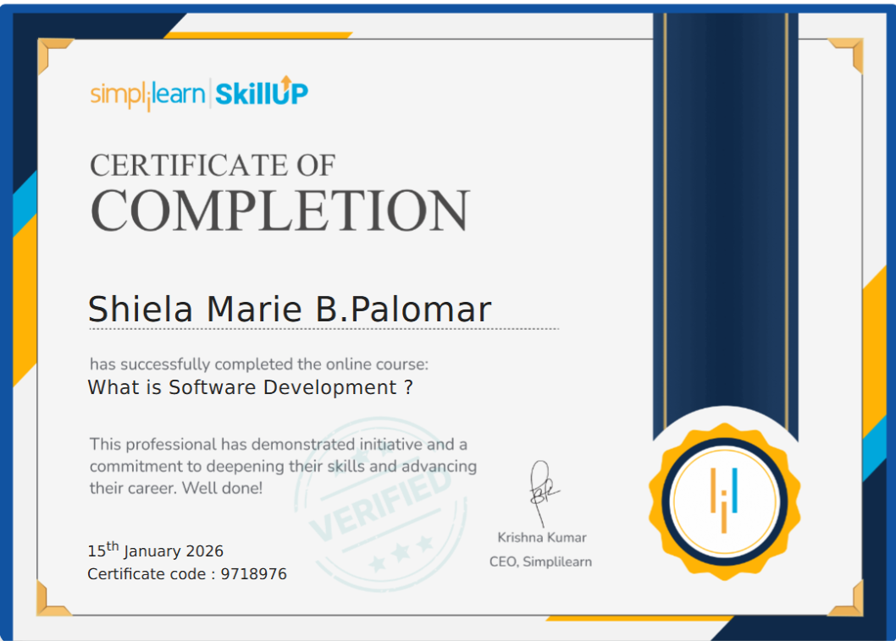
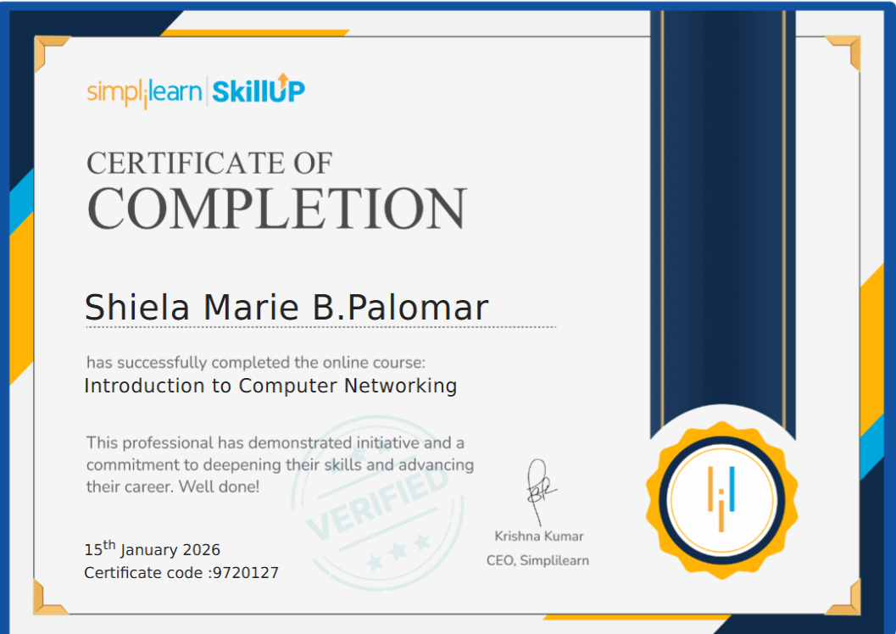

01Mobile Ordering & Management App
Role: Coder / Developer
A mobile application with customer and admin areas, including authentication, menu management, ordering, checkout, order management, and receipts.
View on GitHub ↗HELLO, I'M
A 4th-year Bachelor of Science in Information Technology student at Asian College Dumaguete. I enjoy creating websites, solving coding errors, and learning more about technology.
GET TO KNOW ME
I am a 4th-year Bachelor of Science in Information Technology (BSIT) student at Asian College Dumaguete. I chose BSIT because I am very curious about computers and want to dig deeper into how technology works.
Throughout my studies, I have developed an interest in web development, cybersecurity, programming, and coding. I especially enjoy building websites and solving coding errors.
Outside academics, I enjoy listening to music and playing e-games. My goal is to build a career as a web developer, software developer, or cybersecurity professional.
2011 — Graduated from Pamplona National High School
2021–2022 — Remotask, Tanjay
2023 — Started BSIT at Asian College Dumaguete
Now — 4th-year BSIT student
WHAT I WORK WITH
SELECTED WORK

01Role: Coder / Developer
A mobile application with customer and admin areas, including authentication, menu management, ordering, checkout, order management, and receipts.
View on GitHub ↗
02Role: Team Member / Contributor
A web-based system for managing alumni information and donation-related records.
View Project ↗
03Role: Coder / Developer
Academic and practice projects focused on TypeScript, React state management, and modern web development.
TypeScript ↗ React Hooks ↗LEARNING & ACHIEVEMENTS





Click “View Certificate” to open a larger copy.
MY CV
Download my CV for an overview of my education, skills, projects, certifications, and experience.
LET'S CONNECT
Feel free to reach out through my school email or visit my GitHub profile.